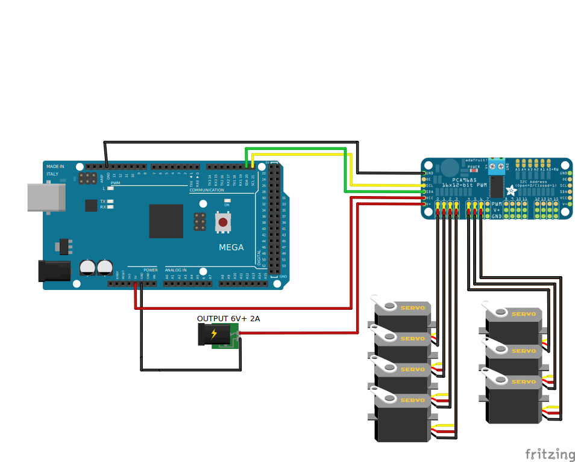

Schematics
With the hardware designed, it was time for the electronics. As mentioned previously
I used an Arduino Mega 2560 and PCA9685 to control the robot. The Arduino was used to recieve
serial commands and interpret them as signals to send to the PCA9685. The PCA9685 is a servo
motor driver that can control many servos at once. For this project I was controlling 7 low power
servos so it seemed like a good fit. I was running the control loop for these serial commands at
9600 Baud and a control loop rate of 60Hz for the servos. I used an external bench top power supply (not factored
into the cost of the project) to supply 6 Volts to the PCA9685 V+ pin to power the servos. I did not use
the given PCA9685 power terminal block to power the servos. For whatever reason the PCA9685 chips
I purchased did not have the terminal pins wired correctly and was not supplying power. The work around
was just to use the V+ pin, typically used for powering other PCA9685 boards when chained together. The arduino
was powered by the computer sending serial commands. See the following schematic for wiring details.

The CAD model and electronic schematics were completed and the physical hardware was printed and assembled.
The total cost of materials came down to around only $140. This included a $20 roll of PLA, the Arduino, PCA9685, the wires
, some hardware to hold the parts together, the servos, and the end effector claw. I was surprised at how much
cheaper I was able to assemble the arm for, but I have observed that these inexpensive parts have their draw backs.
The servos are not as strong as I'd like and they have a smaller holding torque than expected. The arm struggles to reach
some of the areas within the arm's joint space.
In order to determine what the servos could feasibly do, I had to calibrate them. I wanted to be
able to send an angle command to the arduino and have the servos move accodingly, but in order to
use the PCA9685 with the necessary Adafruit library the servos require PWM values. For each
servo I assigned a PWM value and measured how the angle changed with an offhand protractor I had.
Possibly not the best solution, but after I got 20 or so points for each joint I figured it would be within
a few centimeters of accuracy as I was hoping. I ran a linear regression for each servo's Angle to PWM datasets
and found a good fitting calibration. With the calibration complete I was able to make my control script, RevynMat2ArdController.ino.
With this script I tried to drive the servos within different ranges to see where they would fail or where they
could supply the necessary torque. You will see in the future forward kinmetics and inverse kinematics
project how this plays out.